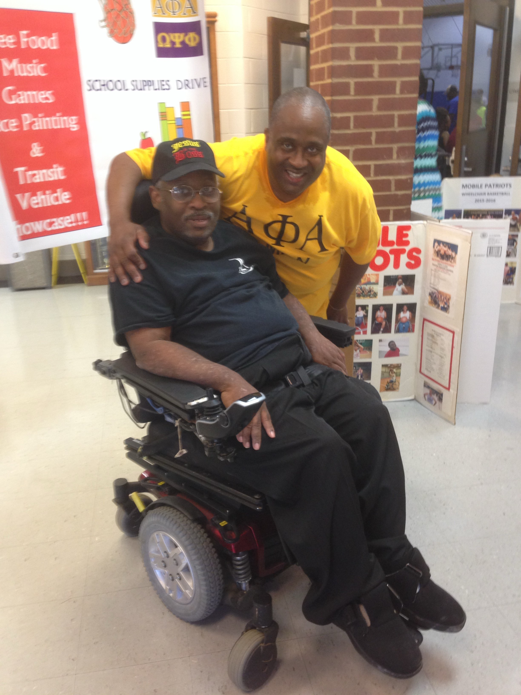
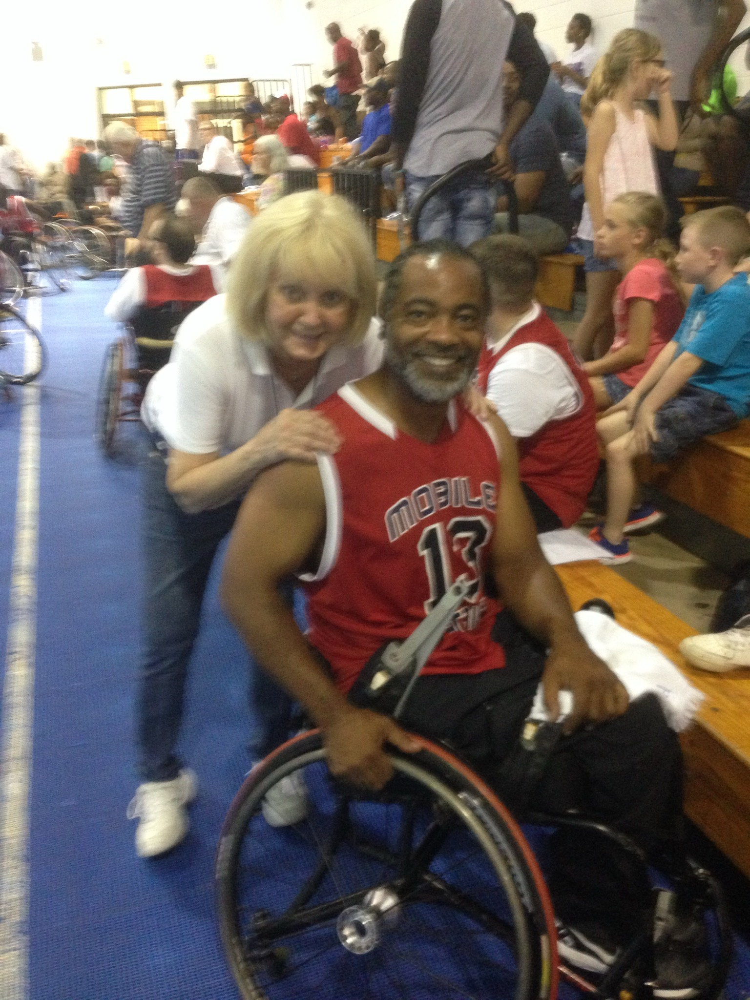
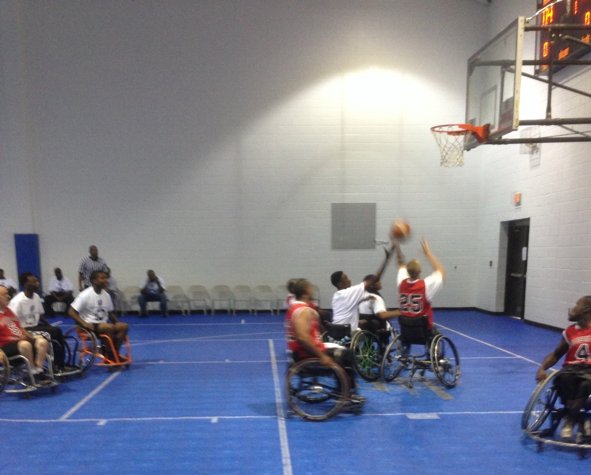

Spinal Cord Injury Support Group
Sponsored by:
About Us
We are members of the community who understand the daily challenges of living with spinal cord injuries. Our group is dedicated to supporting individuals who have experienced spinal cord injuries, as well as their caregivers.
Our mission is to create a supportive environment where individuals can share experiences, learn from each other, and find hope and strength in the community. We recognize that most people who haven't experienced a spinal cord injury cannot fully understand the daily challenges we face.



IF YOU HAVE A SPINAL CORD INJURY, KNOW THAT YOU ARE NOT ALONE. PLEASE JOIN US AND SEE HOW OTHERS DEAL WITH THEIR INJURY.
YOU DO HAVE A VOICE!!!
Our Group Activities and Discussions Include:
- Fellowship - Meet and socialize with other who live with spinal injuries
- Coping - Develop strategies for managing conditions related to spinal injury
- Dealing - Discuss and plan for life after spinal injuries